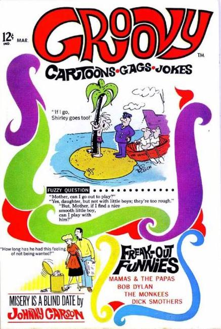

Groovy

Series: 3 issues 1968
Publisher: Marvel
Cover by Ted Trogdon
Joke collection:
- "Cartoons To Blow Your Mind" by Bob Tupper and Bob Thaves
- "Cooling It" by Bob Tupper and Bob Thaves
- "Freak - Out Funnies" photos of Sonny and Cher, Mammas and Papas
- "Dopey Doctors" script by Dale Allen
- "Mind Losing Limricks" by Ted Trogdon
- "1968 Hairiest Cartoons" by Ted Trogdon
- "Misery is a Blind Date" by Johnny Carson